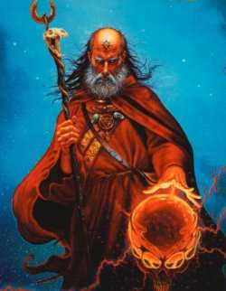

Forums galactiques > Assemblée Galactique : diplomatie officielle > Victoire!!!!!!!!!!!!!!!!
Pages : 1
| promethe Respect diplomatique : 110  27/04 ETU 19:05 | Score : 7 Détails L'AG était silencieuse
Soudain, la porte d'entrée s'ouvrit avec fracas. On vit entrer le commandant Promethe, revêtu d'une tenue d'apparat étincellante, le torse croulant sous les décorations diverses. Il était accompagné de sa garde rapprochée, et on vit approcher avec lui une multitude de commandant. Il s'avanca alors vers le centre de l'AG et pris la parole d'une voix forte : Chers amis. Aujourd'hui est un grand jour Aujourd'hui c'est la fin de la tyrannie et de l'oppression d'un gouvernement totalitaire et sans fondement. Aujourd'hui c'est la victoire de la Résistance!! En effet, suite à la perte de son système natal pris d'assault par mes vaillantes troupes de combats, et appuyés par des centaines de millions de kamikazes, dévoués à notre cause, nous avons pris le controle du sytème originel de cet infâme nain régnant sur son tas d'or. Celui ci n'a pu que s'enfuir en constatant l'ampleur du désastre, et malgré une riposte, quoique tardive mais efficace, nous avons maté cette tentative et définitivement assis notre emprise sur ce système. Coupé de ses bases, et sans aucune troupe avec lui, le commandant Thâois à tout de même réussi à s'enfuir, dans un CLA de dernière génération, et malgré le fait que nos meilleurs troupes aient été lancées à sa poursuite, nous n'avons pu le rattraper. Les premiers rapports d'espions nous apprennent qu'il aurait quitté ce monde, on parle même d'un suicide. Je remercie donc particulièrement le commandant Xeos, qui a dirigé les équipes de kamikazes en coordination parfaite avec les autes troupes, et qui a montré un courage et une disponibilté fantastique, le commandant salverius qui a lancé les premières offensives sur les planètes de Thâois et ainsi il pu obtenir de précieuses informations, le commandant Tolkien, source d'informations sur l'état des forces de l'ennemi, qui nous ont permis d'ne exploiter les faiblesses le commandant Chrome qui a fourni de nombreuses troupes alors que nos moyens étaient encore faibles. je remercie aussi tous les commandants de la Résistance, qui ont su détourner l'attention de l'ennemi, je nomme ici les commandants Cyrkan, Aldur, Actarus, Ichimaru Gin, Tsumi qui nous a fourni sans cesse des informations de qualité, et qui nous a permis de prendre l'avantage sur l'infame triumvirat. Et enfin je dédie cette victoire au commandant Blutch revenu a temps pour voir cette victoire, et camarade précieux tout au long de cette guerre, aux commandants Bouh, Folken Fanel, Mighty Goat, qui sont loin a présent, mais j'espère qu'ils nous entendent, et qu'ils sont fier de nous avoir laissé ce combat... Un officier s'approcha et murmura a l'oreille du commandant Promethe : "tout se déroule comme prévu, nos troupes vont prendre le controle du gouvernement incéssamment sous peu C'est le commandant Chrome qui va sans doute gagner la course" "Parfait" répondit Promethe Vous aurez bientot de nos nouvelles." puis il s'éloigna un peu en laissant ses camarades s'exprimer. | ||
| Salverius Respect diplomatique : 169  27/04 ETU 19:29  | Score : 7 Détails Le commandant Salverius s'avança alors pour congratuler son noble allié.
Après une chaleureuse poignée de main non dénuée d'émotion, il lui glissa: "Veni, vidi, vici, cela fut ardu mais nous l'avons fait, j'espère que nos soldats pourront rapidement être démobilisés" Puis se retournant vers l'assemblée "Voyez, voyez ce que peut faire une belle alliance coordonnée, même contre un ennemi 100 fois plus riche que tous ces commandant réunis. Vous aviez tort d'avoir peur et de trembler devant cette adversaire. Certes, il s'est avéré dangereux et puissant mais l'union a fait la force et nous triomphons!!! Merci à tous ceux qui ont permis cette formidable épopée. Le regretté Mighty Goat avant tous. Je ne renommerrais pas les commandants qui ont participés à cette épopée, directement ou plus discrètement, ils se reconnaitront et nous songeons à élever une stelle pour ces héros, particulièrement pour ceux qui sont tombés sous les coups du triumvirat sanglant Un merci tout particulier aux commandant Promethe et Tolkien, qui furent plus que de précieux alliés." A ce moment, un homme de haute stature vétu d'un cape marqué du sigle de la Salverius Incorporation Company entra dans l'assemblée et chuchota quelques mots à l'oreille du commandant Salverius On entendit ce dernier lui répondre "Merci général, dites à mon navire amiral de mettre le cap sur le 0 avec les 3èmes et 5èmes flottes, la fin est proche" Et au loin, on pouvait entendre un chant s'élever des vaisseaux des flottes de la résisance: "Ami, entends-tu les croiseurs qui menacent nos systèmes ? Ami, entends-tu les cris d’une galaxie qu’on enchaîne ? Ohé, fédérés, alliantistes et guildéens, c'est l'alarme. Ce soir l'ennemi connaîtra le prix du sang et les larmes. Nous tous aujourd’hui on se bat, il faut y’aller à plein gaz. Sortez des garages les ioniques, CLA et kamikazes. Ohé, commandants résistants soyez prêts, c’est la lutte ! On va leur faire voir comment nos ennemis on les butte. Ici chacun sait ce qu'il veut, ce qu'il fait quand il passe. Ami, si tu tombes un ami sort de l'ombre à ta place. Demain du sang noir sèchera à la lumière sur les routes. Chantez, compagnons, dans la nuit la Liberté nous écoute... Ami, entends-tu les croiseurs qui menacent nos systèmes ? Ami, entends-tu les cris d’une galaxie qu’on enchaîne ? | ||
| xeos Respect diplomatique : 29  28/04 ETU 03:05 | Score : 6 Détails Xeos discretement installé au fond de la salle, s´avanca à son tour d´un pas sur et puissant.
Dégageant toute son aura naturelle qui impose le respect, il prononca ces quelques mots. Messieurs, Aujourd hui est certes un grand jour car seul la victoire est belle. Faire triompher un groupe dont le but était de rétablir la lumière dans cette galaxie a été notre unique motivation et objectif depuis l´appel de nos chers fils aujourd´hui disparus. Nous nommons les commandants Spectror et Kerstan. A eux aussi nous dédions cette victoire. Puisse cette lumière éclairer tous nos mondes et demeurer à jamais. Nous prévenons et mettons en garde tous commandants désireux de restaurer les ombres, car nous serons a nouveau le bras et leur pourfendeur. A bon entendeur.... Désormais en attendant ce jour car nous savons qu´il viendra, nous retournons à notre tâche première qui est de suivre et perséver dans la voie de la sagesse afin d´atteindre le nirvana. Une dernière pensée à tous nos valeureux rangers et aux combattants de tous mondes disparus dans ce conflit. Que la sagesse vous guide. Xeos, guerrier mystique. | ||
| Gouvernement Respect diplomatique : 59  28/04 ETU 03:40 | Score : -4 Détails Je vais me permettre de vous répondre, croyez vous que vous pouvez crier victoire, victoire contre qui, contre quoi... il était riche, a régit la Galaxie pendant plus de 5 mois... en période normal, vous n'aviez réussi a lui prendre aucune planet, a lui faire le moindre mal a part quelques isolées.... qu'il a repris aussi vite derriere
Il a tjrs avec Kev car il n'a joué que avec lui, n'a jamais été associé au autres même si vous en étiez ou êtes toujours persuadé, fait attention à garder le plus de Commandants dans cette Galaxie, du respect je crois Je crois même si il n'était pas très grand, il a su (et c'est le seul parmis les 3 Galaxies) durer.... Là, il a emmené ses trillions avec lui (don a personne)... LE RESPECT, vous connaissez, n'est ce pas Xeos ... changer le nom de sa planet mere ainsi que d'autre de son natal, je trouve cela particulierement glorieux, bravo, c'est pour cela qu'il est partis par dégout et non pour autre chose.... et oui, vous ne l'avez pas vaincu a proprement parlé ... 27 trillions de leems (10^18 pour les nom matheux, n'est ce pas Promethé....), il aurait pu reprendre ses planetes assez facilement surtout avec mon aide et mes 2Ma de kami (qui ont disparu évidemment..) Allez.... amusez vous bien, il vous rest quinze jours.. les journées vont être longues à présent Etic from Taiwan, dégouté par tant de mépris ps: Xeos... Spectror était l'alliantiste personnel de Thâois ...et non Tzumi..(tjrs vérifié les info des personnes que l'on connait pas) et oui... tu en apprends tout les jours | ||
| cyrkan Respect diplomatique : 45  28/04 ETU 07:54 | Score : 5 Détails Mes amis je suis heureux, oui
Heureux que tant d'éffort est portés leur fruit. Heureux que les millions de morts de cette guerre hors norme n'est pas servit à rien. Heureux que la justice recommence à prendre le dessus. Heureux que la démocratie rennaisse de ces cendres aprés des mois de guerre. Mes amis un jour nouveau se lève, un jour dans lequel tout les commandants on leurs place. Mes amis sortés de l'ombre et approchés afin de gouter aux sensations de la libèrté retrouvé. Sur ces mots il se tourna vers ces camarades résistants et enleva pour la première fois son casque à l'assemblée. Les commandants découvrirs un visage marqué mais souriant. Il devait avoir dans la quarantaine. Au coin de ces yeux apparut une petite larme... Sans doute pensait t'il à ces camarades disparut... | ||
| xeos Respect diplomatique : 29 28/04 ETU 09:27 | Score : 3 Détails Bonjour,
Cher gouvernement, croyez ou non si vous voulez, nous savons ce que respect veut dire. Sachez que et ceci à pu vous arrivez, qu il arrive qu il faille changer le nom de la planete pour l´attaquer (lors du message: nom de planète incorrecte). D´autres part, concernant le commandant Spectror, nous savons de quoi nous parlons puisqu´il est issu de notre sang ! Que la paix perdure. Que la sagesse vous guide. Xeos, guerrier mystique. | ||
| Salverius Respect diplomatique : 169 28/04 ETU 10:52 | Score : 4 Détails HRP: Mon cher Baccarax, vous allez beaucoup trop loin je pense, merci d'effacer votre message. sinon, vous allez vous faire modérer assez rapidement (éditeez au mois la fin de votre tirade qui est totalement déplacée)
| ||
| Blutch Respect diplomatique : 197  28/04 ETU 13:44 | Score : 7 Détails * De retour de son long périple pour assister son ancien sergent Chesterfield à son chevet, le caporal résistant Blutch entendait surtout le chant de ses frères d’armes résonner à jamais dans sa tête, ses frères qui étaient en train de se battre. *
"Accroche à ton cœur un morceau de chiffon rouge Une fleur couleur de sang Si tu veux vraiment que ça change et que ça bouge Lève-toi car il est temps Passons droit devant nos ennemis En levant le poing et en serrant les dents Nous réveillerons la galaxie Et demain, nos matins chanteront Compagnon de colère, compagnon de combat Toi que l'on faisait taire, toi qui ne comptais pas Tu vas pouvoir enfin les lancer Les kamikazes de la liberté Car le monde sera ce que tu le feras Plein d'amour de justice et de joie" * Sur de lui, se tournant vers son sergent il lui murmura * -Ne ferme pas les yeux, ne t’endors pas maintenant, car la victoire et proche et elle nous appartient. En ce moment, les troupes sont déjà lancé, l’ennemi a beau être cent fois plus fort que nous, il renonce, il fait demi tour devant nos croiseurs. * Le sergent se releva et glissa à son tour une confidence au Caporal * -Heureux que tu ais choisi le bon chemin Caporal. Heureux de te savoir encore envie tandis que les géants de cette galaxie t'avaient prédit une mort certaine pour tes engagements osés. Je n’y croyais pas à la résistance, je t’en ai voulu, mais à présent je regrette, je me battrais pour venir observer ton beau travail, allez va rejoindre tes frères, j’arrive bientôt. * Le Caporal rassuré, revient, et à peine fût-il rentré il parti à la recherche de ses frères d’armes. Horreur, il n’en voyait aucun, aucun dans la taverne, aucun dans la salle de repos du QG, aucun dans la salle de poker, encore pire, le QG de la résistance était vide… … et de là il pu apercevoir le spectacle, les croiseurs défilaient, les valeureux kamikazes près pour le grand sacrifice également. C’est de là qu’il comprit que ses frères d’armes étaient eux même aux commandes des croiseurs pour cette bataille décisive. Bravo mes frères voulu t’il crier, mais le son ne venait pas, c’est donc muet qu’il assista au spectacle, bravo mes frères, et merci de m’avoir réservé cette surprise. Merci Promethe, Salvérius, Folken Fanel, Cyrkan, et tout ceux que j'oublie, merci aussi aux disparus Mighty Goat, et particulièrement à la famille Bouh père et fils malheureusement absente. Déçu de n’avoir pas réussi à transformé l’ennemi en ami, déçu de voir que ce long combat causa de nombreuses pertes et de nombreux départs, mais avant tout heureux de voir cette victoire pourtant impossible se réaliser, cette victoire qui nous permettra de mieux organiser nos derniers jours, l’esprit libéré. * | ||
| Aldur Respect diplomatique : 1  28/04 ETU 19:35 | Score : 1 Détails * Un personnage presque inconnu à l’assemblée ce levas et pris la paroles, après avoir salué les nobles résistant présent dans la salle.*
Je suis heureux qu’en ce jour la justice ait triomphé grâce au courage et à la bravoure de tous ces hommes qui on risqué leur vie pour une cause qui semblait perdue. Mais il reste beaucoup à faire avant que les plaies laissées par la tyrannie disparaissent. Après avoir fêté cette victoire il restera à rebâtir un gouvernement diplomatique fort. Il faudra également reconstruire ce que la guerre a détruis ce qui, tout le monde le sait, sera une tache longue et difficile. Encore merci a vous tous de nous avoir délivré de la tyrannie. Et longue vie a nos héros. * Tout en disant ces derniers mots il reprit sa place parmi cette illustre assemblée.* | ||
| promethe Respect diplomatique : 110 30/04 ETU 13:12 | Score : 7 Détails Le commandant Promethe repris alors la parole.
Ca y est, enfin le gouvernement est tombé, il est désormais protégé par la Resistance. l'accès au système 0 est désormais strictement réglementé. A certains commandants, qui ont voulu profiter de la situation pour s'emparer du gouvernement, je les préviens que nous ferons tout ce qui est en notre pouvoir pour les en empêcher, et que si cela signifie porter la guerre jusque dans leur systèmes nous le ferons. Promethe | ||
| xeos Respect diplomatique : 29 30/04 ETU 15:48 | Score : 3 Détails *Le commandant Xeos attentif aux paroles de Prométhé sorti des rangs et dit*
Noble Assemblée, Nous Xeos, réaffirmons notre appui au commandant Prométhé et à son gouvernement tant qu'il sera le reflet des valeurs justes de notre monde, nous resterons son glaive. Malheur à ceux qui manqueront de respect à ces valeurs. Toutes attaques envers nos états, nos alliés et tout commandant nécessiteux suite à des abus, seront sévèrement réprimandés. Que la paix perdure. Que la sagesse vous guide. Cordialement, Xeos, guerrier mystique. | ||
| Lord Oblivion Respect diplomatique : 46  30/04 ETU 20:21 | Score : 4 Détails Vive la liberté!
Vive la fraternité! Vive la démocratie! Bonne route , cher gouvernement que l'on attendait plus! |
Pages : 1
Forums galactiques > Assemblée Galactique : diplomatie officielle > Victoire!!!!!!!!!!!!!!!!